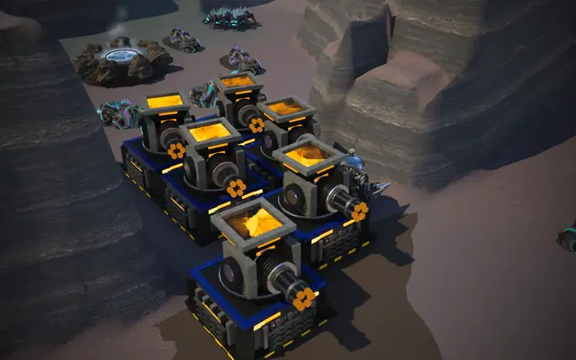
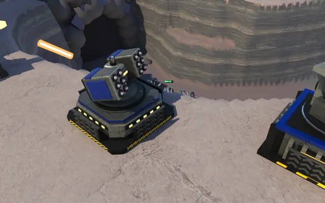
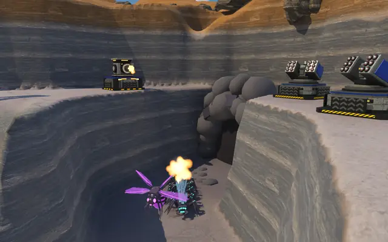
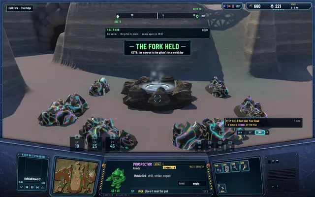
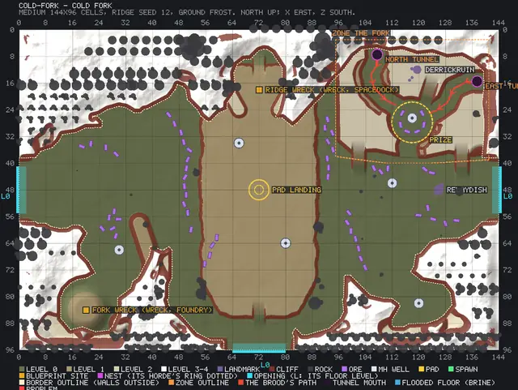

Build anywhere in the canyon
I asked for this one: no more marked spots for the guns. You place any building anywhere you can stand in a canyon, on the rims, on the floor, across the Brood's path itself, packed as tight or as loose as you like. The walkers go round what they can and bite through what walls them off.

My words to the manager: on the tower defence area I don't want explicit slots for what and where to build; players can place whatever anywhere, and pack the buildings as close or as far as they want. So the build spots are gone from all three canyons, and the ordinary rules are the only rules: the footprint has to fit on level, standable ground with nothing in the way, within your build reach, at the ordinary price and level floor, under the realm's limits. There's no spacing beyond the footprints, so guns pack side by side.
Two cells to funnel, none to wall
The Brood's walkers now treat your buildings as the terrain they are. While any way to their next waypoint is open, they route round. When there is none, they bite through the nearest of your buildings, checking every half second. Gloamwings fly over as before. Buildings snap to whole cells and the walkers keep about a third of a cell off every footprint, so the narrowest gap they'll use is two cells. Pack tight to wall a way off, and they'll chew through; leave two cells, and they'll funnel through under your guns.
Measured at The Drowned Cut: with the Salt arm walled off, 3 of 4 walkers bit the line and none got past it; with a two-cell gap, 4 of 4 came through and the line was untouched.
The straggler
The balance pass found a wave at The Fork that stayed out for over a thousand seconds, nineteen minutes, without reaching the guns or the prize. The cause was a hit Lodeback fleeing to the region's nearest edge, which was behind the canyon wall, and standing there until the wave's clock ran out. Now a leaving bug goes out by its own tunnel, and one that can get no nearer its exit for 4 seconds vanishes where it stands. A full cycle resolves every wave; the longest a wave stayed out was 16 seconds, and 12 Gatling Guns with 5 AA towers hold The Fork through wave 10, which they couldn't before.
Small print
The turrets the Matriarch fells when a wave gets through are every gun within the zone's outline: 34 cells from the prize at The Fork, 43 at The Drowned Cut, 21 at The Roost. The frontier pilots build no turrets in a canyon; their defender fights there and patrols the prize. All three canyons' region files, the map and the DEFENCE tab were redone for it, and the pictures of The Fork's game and the other two canyons were shot again on the new layout.
In pictures

Packed: six guns with no gap between them.
A Sentinel and a Gatling Gun on the rim, placed wherever they fit.
A Gloamwing meeting the Sentinels' fire.
THE FORK HELD, through wave 10 this time.
The region file's preview after the change: the zone, the tunnels, the paths, the prize. No spots.